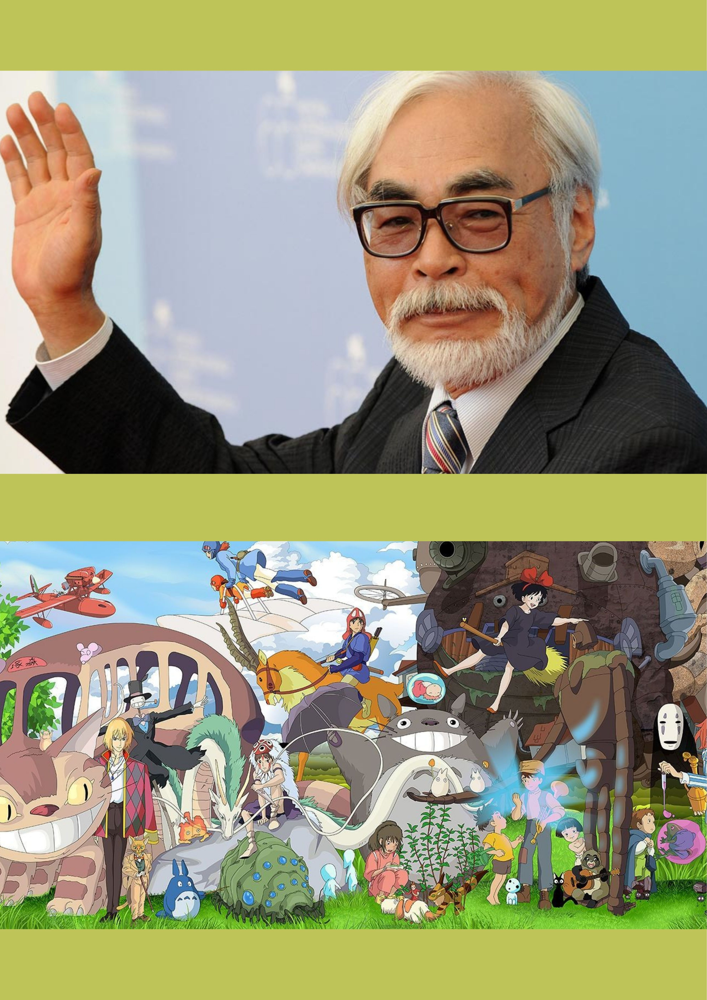

La magia de Studio GhibliEs un estudio cinematográfico de animación japonesa conocido por sus largometrajes y grandes éxitos . Las animaciones tienen gran acogida a nivel mundial y algunas han recibido varias nominaciones y premios.Fundado en 1985, dirigido por el galardonado director Hayao Miyazaki, y hasta 2018 estuvo dirigido por Miyazaki junto a su amigo y mentor, Isao Takahata, fallecido en ese año. Hayao Miyazaki es director de cine de animación, productor, animador y co-fundador de Studio Ghibli, es el genio detrás de “Mi vecino Totoro” o “El castillo ambulante” entre las más conocidas.Sus historias son fantásticas llenas de sentimientos y experiencias, sin embargo y a pesar de lo que pareciera, él mismo ha definido que sus películas no son meramente infantiles, pues están diseñadas para tocar el corazón de incluso los más grandes de la familia. Seis de las películas de Studio Ghibli se encuentran entre las 10 películas de anime más taquilleras realizadas en Japón. Muchos de sus trabajos han ganado el premio Animage Anime Grand Prix, y cuatro han ganado el Premio de la Academia Japonesa de Animación del Año. Cinco de las películas de Studio Ghibli han recibido nominaciones al Óscar. El Viaje de Chihiro ganó el Oso de Oro en 2002 y el Premio de la Academia a la Mejor Película de Animación en 2003. Debido a la fama de los estudios se abrió en las afueras de Tokio el Museo Ghibli. |
 |